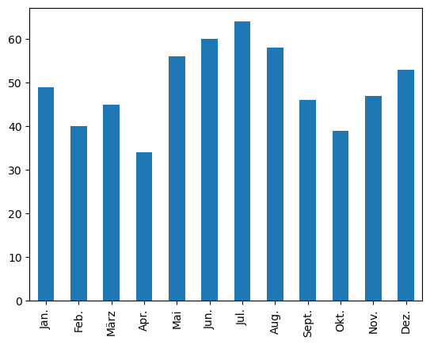
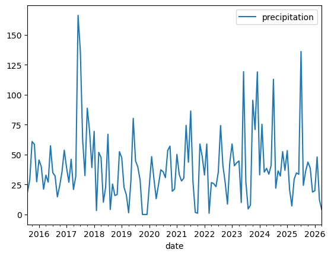
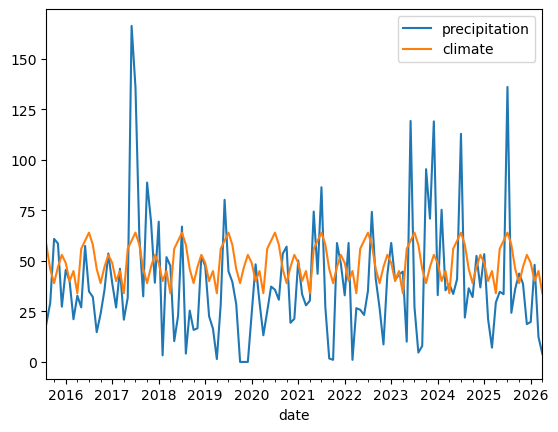
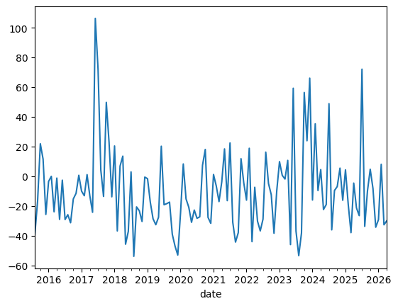
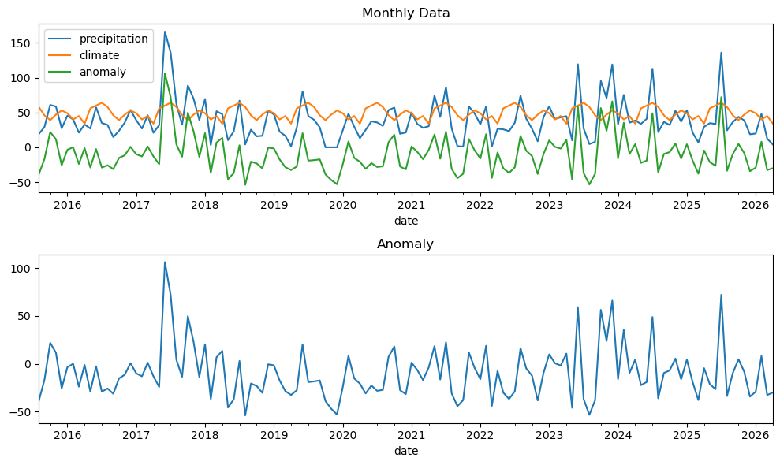

Code
import pandasimport pandasstation_ids = pandas.read_csv("data/Niederschlag_1981-2010_Stationsliste.txt",
encoding="iso-8859-1", delimiter=" *; *",
index_col="Stations_id", engine="python")station_ids| Stationsname | geogr. Breite | geogr. Laenge | Stationshoehe | Bundesland | Unnamed: 6 | |
|---|---|---|---|---|---|---|
| Stations_id | ||||||
| 1 | Aach | 47.841299 | 8.849299 | 478.0 | Baden-Württemberg | NaN |
| 2 | Aachen (Kläranlage) | 50.806581 | 6.099638 | 138.0 | Nordrhein-Westfalen | NaN |
| 3 | Aachen | 50.782659 | 6.094087 | 202.0 | Nordrhein-Westfalen | NaN |
| 4 | Aachen-Brand | 50.768313 | 6.120705 | 243.0 | Nordrhein-Westfalen | NaN |
| 6 | Aalen-Unterrombach | 48.836072 | 10.059764 | 455.0 | Baden-Württemberg | NaN |
| ... | ... | ... | ... | ... | ... | ... |
| 19697 | Wassertrüdingen/Wörnitz | 49.046341 | 10.602684 | 435.0 | Bayern | NaN |
| 19698 | Werda/Vogtland | 50.448020 | 12.305168 | 595.0 | Sachsen | NaN |
| 19701 | Wertingen/Zusam | 48.557500 | 10.674167 | 430.0 | Bayern | NaN |
| 19706 | Oberndorf am Neckar | 48.285077 | 8.576395 | 516.0 | Baden-Württemberg | NaN |
| 19781 | Ingolstadt | 48.742909 | 11.423324 | 367.0 | Bayern | NaN |
5740 rows × 6 columns
station_ids.columnsIndex(['Stationsname', 'geogr. Breite', 'geogr. Laenge', 'Stationshoehe',
'Bundesland', 'Unnamed: 6'],
dtype='str')station_ids.info()<class 'pandas.DataFrame'>
Index: 5740 entries, 1 to 19781
Data columns (total 6 columns):
# Column Non-Null Count Dtype
--- ------ -------------- -----
0 Stationsname 5740 non-null str
1 geogr. Breite 5740 non-null float64
2 geogr. Laenge 5740 non-null float64
3 Stationshoehe 5740 non-null float64
4 Bundesland 5740 non-null str
5 Unnamed: 6 0 non-null float64
dtypes: float64(4), str(2)
memory usage: 313.9 KBstation_ids.head()| Stationsname | geogr. Breite | geogr. Laenge | Stationshoehe | Bundesland | Unnamed: 6 | |
|---|---|---|---|---|---|---|
| Stations_id | ||||||
| 1 | Aach | 47.841299 | 8.849299 | 478.0 | Baden-Württemberg | NaN |
| 2 | Aachen (Kläranlage) | 50.806581 | 6.099638 | 138.0 | Nordrhein-Westfalen | NaN |
| 3 | Aachen | 50.782659 | 6.094087 | 202.0 | Nordrhein-Westfalen | NaN |
| 4 | Aachen-Brand | 50.768313 | 6.120705 | 243.0 | Nordrhein-Westfalen | NaN |
| 6 | Aalen-Unterrombach | 48.836072 | 10.059764 | 455.0 | Baden-Württemberg | NaN |
station_ids.tail()| Stationsname | geogr. Breite | geogr. Laenge | Stationshoehe | Bundesland | Unnamed: 6 | |
|---|---|---|---|---|---|---|
| Stations_id | ||||||
| 19697 | Wassertrüdingen/Wörnitz | 49.046341 | 10.602684 | 435.0 | Bayern | NaN |
| 19698 | Werda/Vogtland | 50.448020 | 12.305168 | 595.0 | Sachsen | NaN |
| 19701 | Wertingen/Zusam | 48.557500 | 10.674167 | 430.0 | Bayern | NaN |
| 19706 | Oberndorf am Neckar | 48.285077 | 8.576395 | 516.0 | Baden-Württemberg | NaN |
| 19781 | Ingolstadt | 48.742909 | 11.423324 | 367.0 | Bayern | NaN |
delete last column: (unnamed) axis=1 columns, axis=0 rows
station_ids.drop(station_ids.columns[-1],axis=1, inplace=True)station_ids.columnsIndex(['Stationsname', 'geogr. Breite', 'geogr. Laenge', 'Stationshoehe',
'Bundesland'],
dtype='str')station_ids.head()| Stationsname | geogr. Breite | geogr. Laenge | Stationshoehe | Bundesland | |
|---|---|---|---|---|---|
| Stations_id | |||||
| 1 | Aach | 47.841299 | 8.849299 | 478.0 | Baden-Württemberg |
| 2 | Aachen (Kläranlage) | 50.806581 | 6.099638 | 138.0 | Nordrhein-Westfalen |
| 3 | Aachen | 50.782659 | 6.094087 | 202.0 | Nordrhein-Westfalen |
| 4 | Aachen-Brand | 50.768313 | 6.120705 | 243.0 | Nordrhein-Westfalen |
| 6 | Aalen-Unterrombach | 48.836072 | 10.059764 | 455.0 | Baden-Württemberg |
index location, row then column
station_ids.iloc[2,0]'Aachen'slicing by index, upper band is not included
station_ids.iloc[:5]| Stationsname | geogr. Breite | geogr. Laenge | Stationshoehe | Bundesland | |
|---|---|---|---|---|---|
| Stations_id | |||||
| 1 | Aach | 47.841299 | 8.849299 | 478.0 | Baden-Württemberg |
| 2 | Aachen (Kläranlage) | 50.806581 | 6.099638 | 138.0 | Nordrhein-Westfalen |
| 3 | Aachen | 50.782659 | 6.094087 | 202.0 | Nordrhein-Westfalen |
| 4 | Aachen-Brand | 50.768313 | 6.120705 | 243.0 | Nordrhein-Westfalen |
| 6 | Aalen-Unterrombach | 48.836072 | 10.059764 | 455.0 | Baden-Württemberg |
station_ids.iloc[:, 1:3]| geogr. Breite | geogr. Laenge | |
|---|---|---|
| Stations_id | ||
| 1 | 47.841299 | 8.849299 |
| 2 | 50.806581 | 6.099638 |
| 3 | 50.782659 | 6.094087 |
| 4 | 50.768313 | 6.120705 |
| 6 | 48.836072 | 10.059764 |
| ... | ... | ... |
| 19697 | 49.046341 | 10.602684 |
| 19698 | 50.448020 | 12.305168 |
| 19701 | 48.557500 | 10.674167 |
| 19706 | 48.285077 | 8.576395 |
| 19781 | 48.742909 | 11.423324 |
5740 rows × 2 columns
slicing by label, upper band is included
station_ids.loc[3:6,"Stationsname"]Stations_id
3 Aachen
4 Aachen-Brand
6 Aalen-Unterrombach
Name: Stationsname, dtype: strstation_ids.loc[:,"geogr. Breite":"geogr. Laenge"]| geogr. Breite | geogr. Laenge | |
|---|---|---|
| Stations_id | ||
| 1 | 47.841299 | 8.849299 |
| 2 | 50.806581 | 6.099638 |
| 3 | 50.782659 | 6.094087 |
| 4 | 50.768313 | 6.120705 |
| 6 | 48.836072 | 10.059764 |
| ... | ... | ... |
| 19697 | 49.046341 | 10.602684 |
| 19698 | 50.448020 | 12.305168 |
| 19701 | 48.557500 | 10.674167 |
| 19706 | 48.285077 | 8.576395 |
| 19781 | 48.742909 | 11.423324 |
5740 rows × 2 columns
station_ids["Bundesland"]Stations_id
1 Baden-Württemberg
2 Nordrhein-Westfalen
3 Nordrhein-Westfalen
4 Nordrhein-Westfalen
6 Baden-Württemberg
...
19697 Bayern
19698 Sachsen
19701 Bayern
19706 Baden-Württemberg
19781 Bayern
Name: Bundesland, Length: 5740, dtype: strstation_ids.Bundesland #does the same if column name has no spacesStations_id
1 Baden-Württemberg
2 Nordrhein-Westfalen
3 Nordrhein-Westfalen
4 Nordrhein-Westfalen
6 Baden-Württemberg
...
19697 Bayern
19698 Sachsen
19701 Bayern
19706 Baden-Württemberg
19781 Bayern
Name: Bundesland, Length: 5740, dtype: strstation_ids.groupby("Bundesland").count().sort_values("Stationsname")| Stationsname | geogr. Breite | geogr. Laenge | Stationshoehe | |
|---|---|---|---|---|
| Bundesland | ||||
| Bremen | 15 | 15 | 15 | 15 |
| Hamburg | 19 | 19 | 19 | 19 |
| Berlin | 29 | 29 | 29 | 29 |
| Saarland | 54 | 54 | 54 | 54 |
| Schleswig-Holstein | 223 | 223 | 223 | 223 |
| Mecklenburg-Vorpommern | 237 | 237 | 237 | 237 |
| Rheinland-Pfalz | 264 | 264 | 264 | 264 |
| Brandenburg | 302 | 302 | 302 | 302 |
| Sachsen | 356 | 356 | 356 | 356 |
| Thüringen | 391 | 391 | 391 | 391 |
| Sachsen-Anhalt | 411 | 411 | 411 | 411 |
| Hessen | 436 | 436 | 436 | 436 |
| Nordrhein-Westfalen | 436 | 436 | 436 | 436 |
| Niedersachsen | 611 | 611 | 611 | 611 |
| Baden-Württemberg | 619 | 619 | 619 | 619 |
| Bayern | 1337 | 1337 | 1337 | 1337 |
mask = station_ids.Bundesland == "Bayern" #creates a mask where column bundesland is bayernbayern = station_ids[mask] #all data where the mask is truestation_ids.Bundesland.iloc[-1] #tells us what the last entry is, as a check'Bayern'bayern.iloc[17]Stationsname Albaching
geogr. Breite 48.109386
geogr. Laenge 12.104938
Stationshoehe 513.0
Bundesland Bayern
Name: 65, dtype: objectTask for this session:
mask1 = station_ids.Bundesland == "Berlin" #creates a mask where column bundesland is berlinberlin = station_ids[mask1] #all data where the mask is trueberlin.iloc[17]Stationsname Berlin-Malchow
geogr. Breite 52.575287
geogr. Laenge 13.483243
Stationshoehe 53.0
Bundesland Berlin
Name: 419, dtype: object# station_ids.loc[:,"geogr. Breite":"geogr. Laenge"]Assignment: load the 30 year mean precipitation data data/Niederschlag 1981-2010.txt • only keep the columns with the monthly means
precip_ref = pandas.read_csv("data/Niederschlag_1981-2010.txt",
encoding="iso-8859-1", delimiter=" *; *",
index_col="Stations_id", engine="python")precip_ref = precip_ref.loc[:,"Jan.":"Dez."]Monthly climate data:
precip_ref.loc[399].plot.bar()
Assignment: load the hourly data
precip = pandas.read_csv("data/produkt_precipitation_399_akt.txt",
encoding="iso-8859-1", delimiter=" *; *",
engine="python")precip.head()| STATIONS_ID | MESS_DATUM | QUALITAETS_NIVEAU | STRUKTUR_VERSION | NIEDERSCHLAGSHOEHE | eor | |
|---|---|---|---|---|---|---|
| 0 | 399 | 2015082001 | 3 | 0 | 0.0 | eor |
| 1 | 399 | 2015082002 | 3 | 0 | 0.0 | eor |
| 2 | 399 | 2015082003 | 3 | 0 | 0.0 | eor |
| 3 | 399 | 2015082004 | 3 | 0 | 0.0 | eor |
| 4 | 399 | 2015082005 | 3 | 0 | 0.0 | eor |
precip.MESS_DATUM = pandas.to_datetime(precip.MESS_DATUM, format="%Y%m%d%H")precip['date_time'] = pandas.to_datetime(precip.MESS_DATUM, format="%Y%m%d%H") #create new columnprecip_alex = precip[['date_time', "NIEDERSCHLAGSHOEHE"]]precip_alex = precip_alex.rename(columns={"date_time":"date",
"NIEDERSCHLAGSHOEHE":"precipitation"})precip_alex = precip_alex.set_index("date")precip_alex| precipitation | |
|---|---|
| date | |
| 2015-08-20 01:00:00 | 0.0 |
| 2015-08-20 02:00:00 | 0.0 |
| 2015-08-20 03:00:00 | 0.0 |
| 2015-08-20 04:00:00 | 0.0 |
| 2015-08-20 05:00:00 | 0.0 |
| ... | ... |
| 2026-04-12 20:00:00 | 0.0 |
| 2026-04-12 21:00:00 | 0.0 |
| 2026-04-12 22:00:00 | 0.0 |
| 2026-04-12 23:00:00 | 0.0 |
| 2026-04-13 00:00:00 | 0.0 |
89762 rows × 1 columns
monthly = precip_alex.resample("ME").sum() #ME is months endmonthly.describe() #statistics over the entire year| precipitation | |
|---|---|
| count | 129.000000 |
| mean | 39.528372 |
| std | 28.812164 |
| min | 0.000000 |
| 25% | 22.910000 |
| 50% | 33.640000 |
| 75% | 48.600000 |
| max | 166.300000 |
monthly.groupby(monthly.index.month).describe() #index is date time object, count shows 11 years| precipitation | ||||||||
|---|---|---|---|---|---|---|---|---|
| count | mean | std | min | 25% | 50% | 75% | max | |
| date | ||||||||
| 1 | 11.0 | 43.080909 | 14.963813 | 19.80 | 33.0000 | 45.530 | 51.7750 | 69.42 |
| 2 | 11.0 | 38.052727 | 19.801915 | 3.24 | 24.7600 | 39.990 | 48.1950 | 75.33 |
| 3 | 11.0 | 26.577273 | 16.599816 | 1.02 | 14.3900 | 27.990 | 39.2900 | 51.87 |
| 4 | 11.0 | 26.310909 | 15.251537 | 1.41 | 17.0500 | 29.420 | 35.6550 | 47.56 |
| 5 | 10.0 | 30.115000 | 17.810316 | 10.03 | 25.2225 | 27.720 | 33.1750 | 74.44 |
| 6 | 10.0 | 62.480000 | 46.832982 | 22.91 | 34.4625 | 42.310 | 74.5300 | 166.30 |
| 7 | 10.0 | 71.625000 | 43.327513 | 27.16 | 35.3325 | 55.925 | 106.2875 | 136.10 |
| 8 | 11.0 | 30.906364 | 21.515000 | 4.12 | 20.4300 | 27.030 | 35.8800 | 74.27 |
| 9 | 11.0 | 27.925455 | 15.035998 | 1.70 | 20.0650 | 29.190 | 36.3100 | 53.48 |
| 10 | 11.0 | 40.480909 | 32.242088 | 0.00 | 19.8100 | 32.090 | 58.9950 | 95.41 |
| 11 | 11.0 | 39.063636 | 25.046306 | 0.00 | 17.9900 | 38.760 | 58.7200 | 70.93 |
| 12 | 11.0 | 41.870909 | 30.349011 | 0.00 | 24.3400 | 39.200 | 50.5300 | 119.06 |
Monthly data from Alexanderplatz: (to compare with 30 year mean precipitation data)
monthly.plot()
Combining with previous plot
refs = pandas.DataFrame({"precipitation": precip_ref.loc[399].to_list()*12},
index=pandas.date_range("2015-01-01", "2026-12-31", freq="ME"))
#create new pandas dataframe, single column called "precipitation",
# convert alex-data to list and repeat 12 timesrefs| precipitation | |
|---|---|
| 2015-01-31 | 49.0 |
| 2015-02-28 | 40.0 |
| 2015-03-31 | 45.0 |
| 2015-04-30 | 34.0 |
| 2015-05-31 | 56.0 |
| ... | ... |
| 2026-08-31 | 58.0 |
| 2026-09-30 | 46.0 |
| 2026-10-31 | 39.0 |
| 2026-11-30 | 47.0 |
| 2026-12-31 | 53.0 |
144 rows × 1 columns
monthly["climate"] = refs #create a new column and assign it to dataset,
#possible because time remains the same; alignment of indices, ignores all extra valuesmonthly| precipitation | climate | |
|---|---|---|
| date | ||
| 2015-08-31 | 18.90 | 58.0 |
| 2015-09-30 | 29.19 | 46.0 |
| 2015-10-31 | 60.91 | 39.0 |
| 2015-11-30 | 58.59 | 47.0 |
| 2015-12-31 | 27.34 | 53.0 |
| ... | ... | ... |
| 2025-12-31 | 18.73 | 53.0 |
| 2026-01-31 | 19.80 | 49.0 |
| 2026-02-28 | 48.08 | 40.0 |
| 2026-03-31 | 12.36 | 45.0 |
| 2026-04-30 | 4.00 | 34.0 |
129 rows × 2 columns
monthly.plot()
monthly["anomaly"] = monthly.precipitation - monthly.climateIt is getting drier than before
monthly.anomaly.plot()
Homework Session 5: I don’t know why this is adding anomaly to the first plot.
creating multiple plots w/ pyplot.subplot
import matplotlib.pyplot as plt
fig, axes = plt.subplots(2, 1, figsize=(10, 6))
# Top plot
monthly.plot(ax=axes[0])
axes[0].set_title("Monthly Data")
# Bottom plot
monthly.anomaly.plot(ax=axes[1])
axes[1].set_title("Anomaly")
plt.tight_layout()
plt.show()